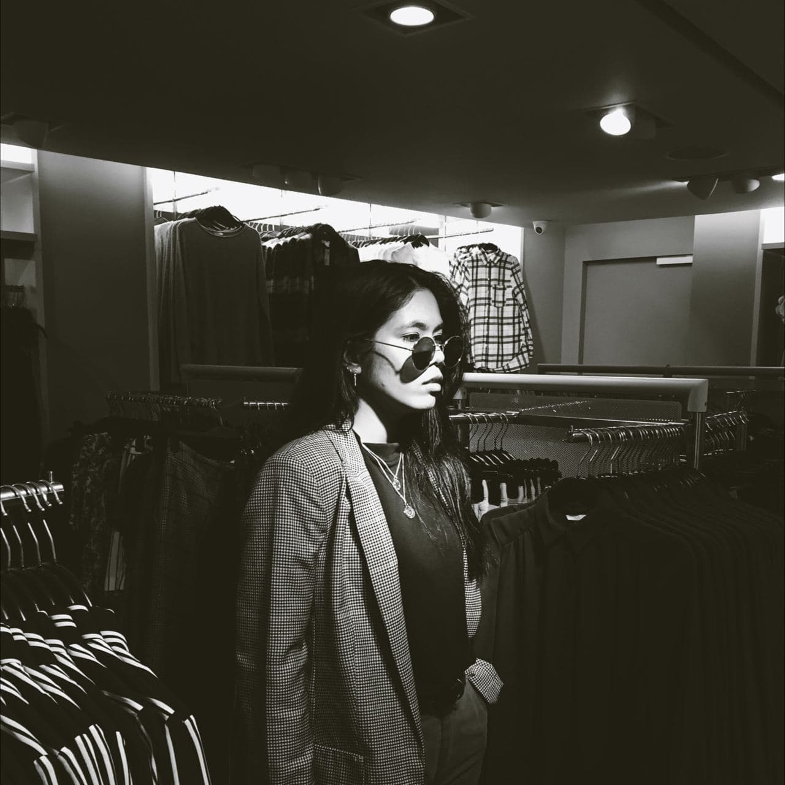

INTAN SAKINAH BINTI AZEMAN
KEY FEATURES
Good fashion sense
Friendly
Fun person to be with
I am going to straight ahead and tell you guys about my key features. I would say I have a good sense in fashion since I love to dress up wherever I go, even just to buy groceries. Although I’m into fashion, most of my clothes are black colour because I can easily pair it with anything, from pants, shoes to accessories. Most important that, it boosts my confidence level which is good because it makes me feel good with myself. Loving yourself is important.
Not only that, but I am also a friendly person. Every time my friends introduce me to their friends, we right away click and became good friends after a few conversations. I can instantly be friend with anyone, especially if we have similar vibes. I love meeting and knowing new people, it makes me learn more in a way of life because each one of us has different mindset, way of thinking and attitude which makes it fun. Sometimes, by knowing other people, we can learn to appreciate life more since we grow up differently and have different perspective in life.
Last but not least, most of my friends also said that I am a fun person to be with, since I hate awkwardness, I like to make people laugh with my stupid jokes. Sometimes it surprises me that they actually laugh at my stupid jokes and seeing them happy makes me happy. I like to create fun environment with my friends especially when we hangout. Creating good memories together is crucial because you only live once and we should not take life for granted and enjoy them while we can!